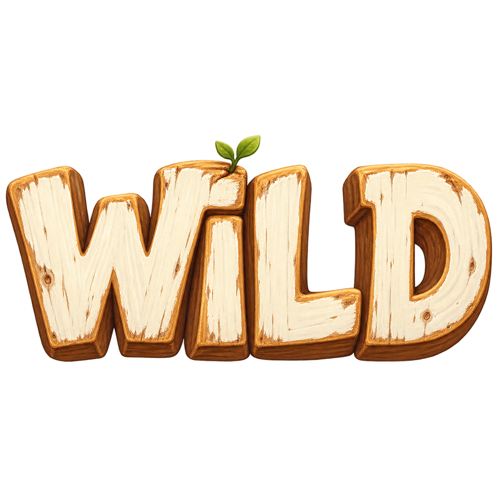

WILD PICKINS / ART PREVIEW
Try painted lettering beside the original WILD. Colors and texture update instantly; your choices are saved in this browser.

Original WILD referenceWarm wood, worn paint, soft depth.The preview uses live font lettering.
Small-size readability
Font availability depends on your computer. These are style studies, not final hand-carved artwork.